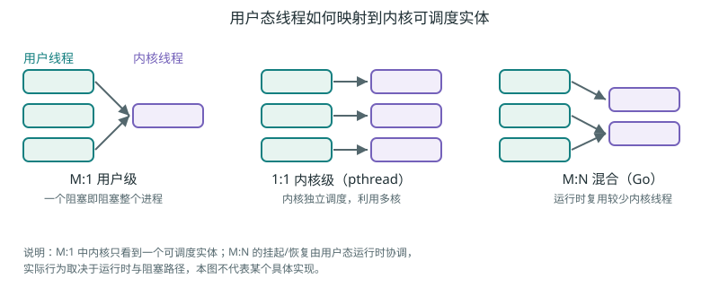

一个进程里有多个执行流时，它们可以共享地址空间，却需要各自保存程序计数器、寄存器上下文和用户栈。共享让线程间通信变得直接，也意味着同步与内存安全责任落在程序设计者身上。线程不是“免费的小进程”：创建、调度、栈空间、同步和缓存局部性都会带来成本。
本章从 Linux 的 clone() 资源共享标志解释线程模型，再比较 1:1 内核线程、M:N 运行时调度与协程。要特别区分“线程由谁调度”和“任务何时让出执行权”：Linux 普通 pthread 通常对应可被内核调度的任务；协程则通常由用户态运行时在少量内核线程上复用，阻塞行为取决于运行时与 I/O 集成方式。
线程：CPU调度的最小单位
教科书上的经典定义：进程是资源分配的基本单位，线程是CPU调度的基本单位。这意味着什么？
一个进程可以包含多个线程，这些线程共享进程的地址空间（代码段、数据段、堆），但每个线程有自己的栈、寄存器和程序计数器。同一进程内线程切换通常不需要切换用户地址空间，但仍需保存/恢复寄存器、执行调度与内核路径；TLB 与 CPU cache 的行为受架构、PCID/ASID、迁移和工作集影响，不能保证“无需刷新”或“热数据仍在”。
| 对比维度 | 进程 | 线程 |
|---|---|---|
| 地址空间 | 独立地址空间 | 共享进程地址空间 |
| 资源开销 | 大（独立PCB、页表、文件表） | 小（只分配栈和寄存器上下文） |
| 切换开销 | 高（TLB刷新、cache失效） | 低（无需刷新地址空间） |
| 数据共享 | 需要IPC（共享内存、管道等） | 直接读写全局变量 |
| 隔离性 | 强（一个进程挂了不影响其他） | 弱（一个线程crash可能导致整个进程崩溃） |
| 创建速度 | 慢（需要复制/COW页表） | 快（共享页表） |
看到"隔离性"这一行——线程因为共享地址空间，一个线程的非法内存访问（比如写野指针）可能直接破坏另一个线程的堆或栈。这也是为什么多线程编程远比多进程编程更需要小心。
关键认知：从内核的视角来看，它根本不知道"线程"这个概念。内核眼里只有"可调度的实体"——其实就是task_struct。但在Linux中，线程和进程的本质区别在于：多个线程之间共享了哪些CLONE_*标志。这一点我们马上细讲。
Linux中线程就是轻量级进程
在Linux的哲学里，没有"线程"和"进程"的严格区分——一切都是"任务"（task）。创建所谓的"线程"时，用的系统调用和创建进程一样都是 clone()，只不过传入了不同的标志位，决定了父子之间共享哪些资源。
这就引出了Linux线程模型最特殊的"艺术"——clone()的flags参数。
clone()的flags艺术
Linux内核中，创建进程和线程都通过 clone() 系统调用实现。区别只在于flags参数：
// 概念示意：fork() 与 pthread_create() 最终都会请求内核创建任务，
// 但 libc 包装层、clone/clone3 系统调用选择及附加 flags
// 会随 libc、架构和内核版本变化。
// fork() 的语义等价于不共享地址空间的子进程创建（SIGCHLD）；
// pthread 的共享资源标志由线程库按 ABI 约定组合。关键的flags含义如下：
| Flag | 含义 | 共享了什么 |
|---|---|---|
| CLONE_VM | 共享地址空间 | 父子进程使用同一个mm_struct（页表） |
| CLONE_FS | 共享文件系统信息 | 当前目录、umask等 |
| CLONE_FILES | 共享文件描述符表 | 打开的文件、socket等 |
| CLONE_SIGHAND | 共享信号处理函数 | signal_struct |
| CLONE_THREAD | 成为同一线程组 | tgid相同（getpid()返回值相同） |
看到没有？pthread_create()创建线程时传入了 CLONE_VM，表示"我们共享地址空间"——这就是线程和进程最根本的区别。如果你创建一个子进程时不传递 CLONE_VM，那么它就是普通进程——有自己的地址空间。
底层视角：在shell里执行 ps -eLf，你会看到每个线程都有一条记录，但同一进程的线程有相同的PID（tgid）和不同的LWP（Lightweight Process ID）。从内核角度看，每个LWP就是一个独立的task_struct——差别在于它们之间的task_struct共享了哪些资源指针。
1:1 vs M:N 线程模型
我们刚才说了，Linux内核里每个线程（轻量级进程）都是一个独立的调度实体（task_struct）。这意味着用户态创建的一个pthread，在内核中就对应一个可被独立调度的实体——这就是1:1线程模型。
但这不是唯一的实现方式。事实上，业界有三种主流的线程模型，各有取舍。
多对一（M:1）线程模型
多个用户态线程映射到一个内核态线程。线程的创建、切换全在用户态完成，不需要系统调用，速度快。但一个线程阻塞（如I/O）会导致整个进程阻塞，因为内核不知道用户态还有别的线程可以运行。这种模型在纯用户态线程库中比较常见（如早期的GNU Portable Threads），现在已经很少用了。
一对一（1:1）线程模型
每个用户线程对应一个内核线程。这是Linux上pthread的实现方式。优点是充分利用多核，一个线程阻塞不影响其他线程。缺点是每次线程操作（创建、切换）都需要系统调用，开销较大。Linux的NPTL（Native POSIX Threads Library）就是1:1模型的代表作。
多对多（M:N）线程模型
M个用户态线程映射到N个内核线程。结合了前两者的优点——用户态线程轻量切换、内核态线程充分利用多核。但实现复杂度极高，需要精巧的用户态调度器。既要在用户态管理M个线程的运行队列，又要处理内核线程的阻塞同步。
| 特性 | M:1（用户级） | 1:1（内核级） | M:N（混合） |
|---|---|---|---|
| 创建开销 | 极低（用户态） | 高（系统调用） | 中等 |
| 切换开销 | 低 | 高（陷入内核） | 中低 |
| 多核利用 | 不能 | 能 | 能 |
| 一个线程阻塞 | 全进程阻塞 | 仅该线程阻塞 | 仅该内核线程阻塞 |
| 代表 | GNU Pth（已废弃） | Linux NPTL (pthread) | Go Goroutine |

机制追踪：一个 pthread 与它所在的进程，共享了哪些内核对象？
“线程共享地址空间”只说对了一部分。把 clone() 的资源共享标志拆开，就能看清哪些对象是一个线程独有的，哪些是整组共享的。
- 由 clone 的 flags 决定：创建内核任务时传入哪些
CLONE_*标志，决定了新任务与调用者共享多少内核对象；libc 在线程库层按 ABI 组合这些标志。 - CLONE_VM 共享地址空间：共享同一个
mm_struct与页表，因此一个线程写全局变量，其他线程能直接看到——这与 fork 的写时复制是两种行为。 - CLONE_FILES / CLONE_FS 共享文件上下文：共享文件描述符表与文件系统信息，一个线程
close()或改工作目录会影响同级线程。 - CLONE_SIGHAND + CLONE_THREAD 组成线程组：共享信号处理相关结构，tgid 相同，
getpid()返回同一个进程号；信号默认按进程处理。 - 独立的执行上下文仍然存在：每个任务有自己的内核栈、寄存器上下文和调度实体，因此仍可被内核独立调度、独立阻塞。
线程 A 修改了一个全局变量，线程 B 一定能立刻看到吗？
内存是同一份，但“立刻”还取决于同步与编译器/CPU 的重排序。没有同步手段时，可见性不保证；这正是下一章同步与互斥要解决的问题。共享地址空间只保证对象相同，不保证访问顺序。
Go Goroutine的M:N调度
Go语言的Goroutine是M:N模型最成功的工业实践。Go运行时维护一个M（Machine，内核线程）对N（Goroutine，用户态协程）的映射，用G（Goroutine）、M（Machine）、P（Processor）三个结构体实现了高效的M:N调度。Go 运行时在 channel、定时器、网络轮询和阻塞系统调用等路径上协调 G 的挂起与恢复；发生阻塞系统调用时，运行时可让出 P 给其他 M/G 继续执行。并非每次系统调用都会切换 G，也不能把所有调度成本描述为“避免内核态切换”。
不要把创建成本写成固定数字。pthread 的默认栈保留空间、实际提交页数和创建耗时受 libc、ulimit、架构及系统负载影响。Go goroutine 使用可增长的用户栈，初始栈大小由运行时实现决定；当前 Go 运行时以约 2 KiB 的固定最小值为基础，并可根据 GC 统计调整后续 goroutine 的起始大小。两者的比较必须注明 Go 版本、线程属性、并发数、测量方法和机器配置。
协程的本质
讲完了线程，我们来聊聊协程（Coroutine）。其实协程的思路比线程更古老——它最早可以追溯到1958年Melvin Conway的论文。协程的核心思想就是：让函数可以暂停执行，在某个时刻恢复执行。
内核调度的是承载协程的线程；操作系统可以抢占该线程，但通常不知道线程内部哪个用户态协程正在运行。协程何时挂起由语言运行时、事件循环或协程库决定：有的实现主要依赖协作式让出，有的运行时还提供抢占式抢占点。因此“协程一定是协作式调度”并不成立。
有栈协程 vs 无栈协程
协程的两种实现方式，是很多初学者容易混淆的。我们直接对比：
| 维度 | 有栈协程（Stackful） | 无栈协程（Stackless） |
|---|---|---|
| 实现方式 | 拥有独立的调用栈 | 复用调用者的栈（状态用对象保存） |
| 可嵌套调用 | 可以（在子函数中yield） | 不可以（只能在顶层函数中yield） |
| 内存开销 | 较大（需要预分配栈空间） | 极小（几字节的状态对象） |
| 语言代表 | Go Goroutine、C++ Boost.Coroutine | Python async/await、Rust async、C++20 coroutine |
Go goroutine 是有栈、可增长的用户态执行单元；初始栈不是固定的 4 KiB 常数，运行时实现与版本会影响实际分配策略。runtime.Gosched() 会让出当前 goroutine 的执行机会，但不是“任意嵌套函数都能透明挂起”的通用协程关键字。Python 的 async/await 通过 coroutine 对象和事件循环协作保存/恢复执行状态，不能简单等同于“没有调用栈”。
async/await的底层原理
无栈协程背后的实现机制其实是一个编译器驱动的状态机变换。以Python为例：
async def fetch_data():
# 当执行到这里时，控制权返回到事件循环
data = await http_request(url_1)
# 当http_request完成时，从这里继续执行
result = await http_request(url_2)
return result
# 编译器实际上把上面的函数变换成类似这样的状态机：
class fetch_data__coroutine:
def __init__(self):
self.__state = 0
def __next__(self):
if self.__state == 0:
self.__state = 1
return http_request(url_1) # await点1
elif self.__state == 1:
self.__state = 2
self.__data =
return http_request(url_2) # await点2
elif self.__state == 2:
self.__result = ... # 最终结果
raise StopIteration 每次await都是一个"暂停点"，协程把当前状态保存到一个状态对象中，返回控制权给事件循环。事件循环（如Python的asyncio或Node.js的libuv）负责监控所有等待的I/O事件，一旦某个事件就绪，就唤醒对应的协程从暂停点继续执行。整个过程完全在用户态完成，不需要内核参与。
本质洞察：协程说到底是把"控制流的切换"从内核态拿到了用户态。它利用编译器（状态机变换）或运行时（独立栈+寄存器保存）来实现函数执行的中断和恢复。对于I/O密集型的应用（比如Web服务器），协程可以轻松管理数十万并发连接——这是线程模型难以企及的。
回顾一下这条"轻量化"的演进路线：进程→线程→协程。进程提供最完善的隔离但切换最重，线程共享地址空间减轻了切换代价，协程则彻底把调度放到了用户态实现了微秒级切换。没有哪种方案是压倒性最优的——隔离、开销、复杂度之间的权衡，取决于你的具体应用场景。
下一章，我们把视角从"谁来执行"转向"谁决定谁先执行"——CPU调度。当一个系统里有几十个可运行的线程时，操作系统如何决定下一次该运行哪一个？公平、高效、低延迟，这三者怎么平衡？Linux的调度器从O(n)到O(1)到CFS再到EEVDF，每一次变革都带来了什么？下一章见。